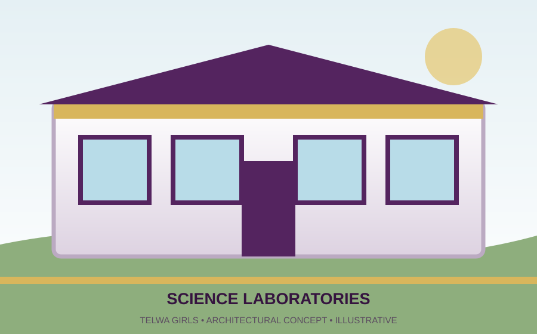
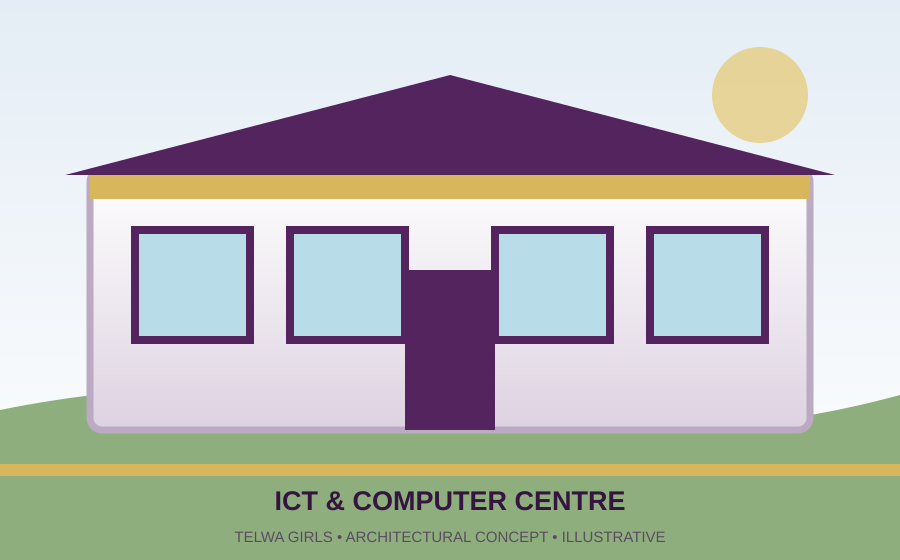
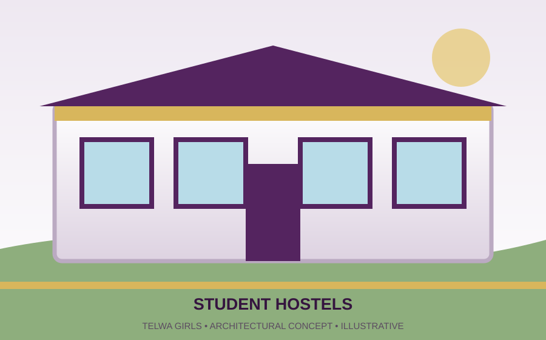
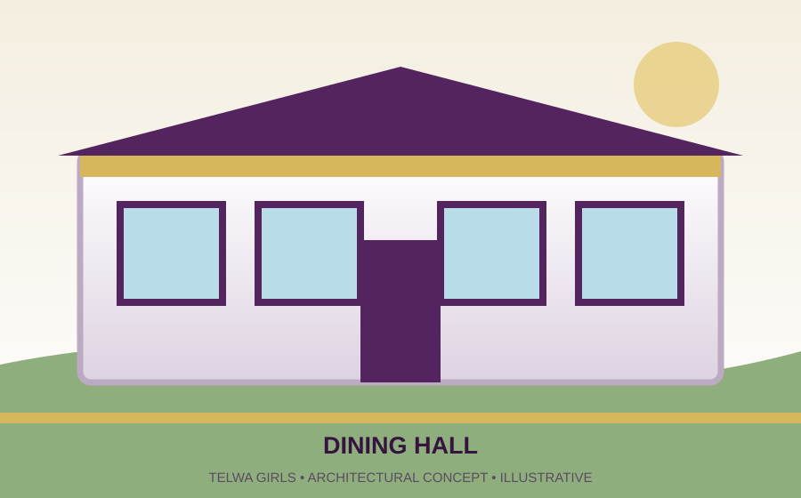
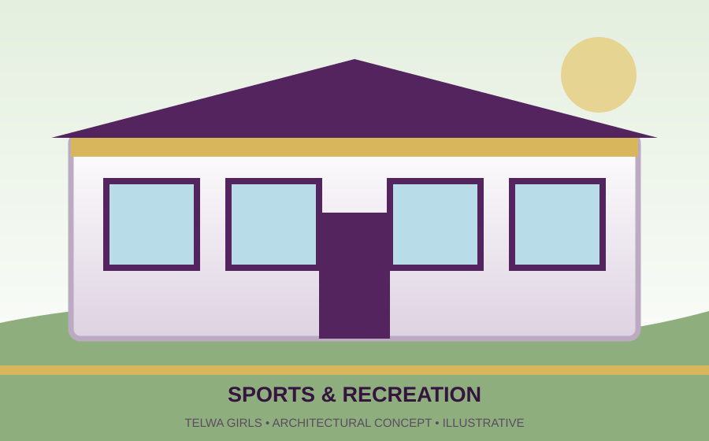

Our Vision
To nurture confident, capable and responsible learners who contribute positively to society.
A school website concept celebrating girls’ education, confidence, leadership and lifelong achievement.
Discover our schoolUse this space to explain what makes your school distinctive.
To nurture confident, capable and responsible learners who contribute positively to society.
To provide an inclusive, supportive environment where every learner can develop knowledge, skills and character.
Integrity, respect, responsibility, curiosity, teamwork and service.
TELWA GIRLS HIGH SCHOOL is a fictional example used to demonstrate how a school can present its identity, history, facilities and community online. Replace this sample paragraph with verified information supplied by the client school.
School profiles, leadership details and historical statements should be reviewed and approved by the school before publication.
Introduce the curriculum, learning departments and academic support available at your school.
Describe the curriculum, subjects and learning pathways offered.
Showcase the library, laboratories, technology and other learning facilities.
Share verified achievements, awards and learner milestones.
Explore this architectural concept gallery prepared for the TELWA GIRLS demonstration. The images represent proposed visual examples, not verified photographs of the actual school.

Illustrative campus concept • Not a verified photograph of the actual school
 01
01Bright, comfortable learning spaces designed to support focus and participation.

02Purpose-designed practical learning spaces for science subjects.
 03
03A welcoming environment for reading, research and independent study.

04Digital learning spaces that build technology skills and confidence.

05A secure, supportive residential environment for learners.

06A spacious, clean setting for meals and student community.

07Facilities that encourage fitness, teamwork and co-curricular achievement.
 08
08A professional reception and administration environment.
Publish school-approved notices, events and community updates here.
Replace with a verified announcement and date.
Share an approved story about student or school achievement.
Add event details, dates and relevant information.
Replace these sample details with the school's verified official contacts before launch.
School office
Email: school@example.org
Telephone: Add official telephone number
Location: Narok County, Kenya (confirm official address)